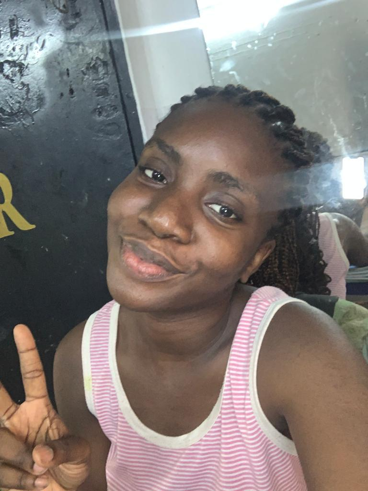

AJIBOYE TOSIN
Founder and CEO ATTALIA EVENTS
I am an event planner and decorator with a knack for turning ideas into projects and seeing it through from start to finish. I believe everybody has a right to their dream birthdays, parties, weddings, etc no matter their budget and have made it my passion to deliver this to every client of mine. I am also a dentist, I love to cook, and I am in the process of becoming a world class developer.
EDUCATION
- SSCE/WAEC certificate
- BDS(In view)
EXPERIENCE
Founder/CEO
Attalia events
An event decoration and management organization
- Managed a team of 3 to deliver event decoration projects for 3 clients and counting
- Generated a total revenue of 500k NGN
- Managed a team of 5 to deliver seamlessly the smooth coordination of one event coordination project and counting
- Created content (designs, reels) for attalia events IG page which has generated over 9000 views leading to increased sales and revenue generation for attalia events
Personal assistant to the CEO
Eventsity
| üóì2019 - 2022 |
üìçLagos |
An event planning, management and decoration organization
- Manage and maintain complex calender coordination for the CEO
- Schedule and organize meetings with clients and vendors on behalf of the CEO
- Assist witrh team project coordination, mainmtenance, and reporting, including creation of status reports
- Contact vendors and follow up to ensure availability at meetings and events
- Handle business relate calls with clients and vendirs on behalf of the CEO
- Ensure smooth running of all events organized
HOBBIES
Exercise
- Aerobics
- Core building
Leisure
- Cooking
- Grills
- Pasta
- Sleeping
- Watching movies
SKILLS
| Interpersonal relationship |
⭐⭐⭐⭐⭐ |
| Writing |
⭐⭐⭐⭐ |
| Public speaking |
⭐⭐⭐⭐ |
| Critical thinking |
⭐⭐⭐⭐⭐ |
Contact me